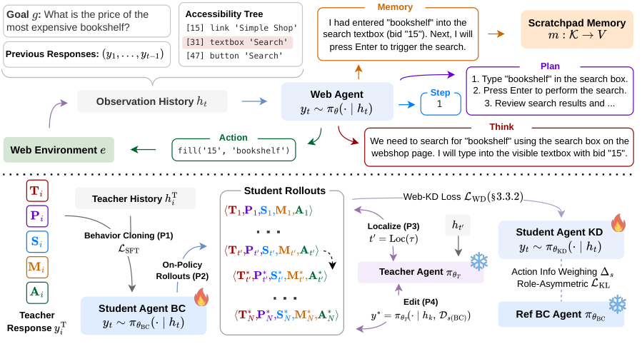
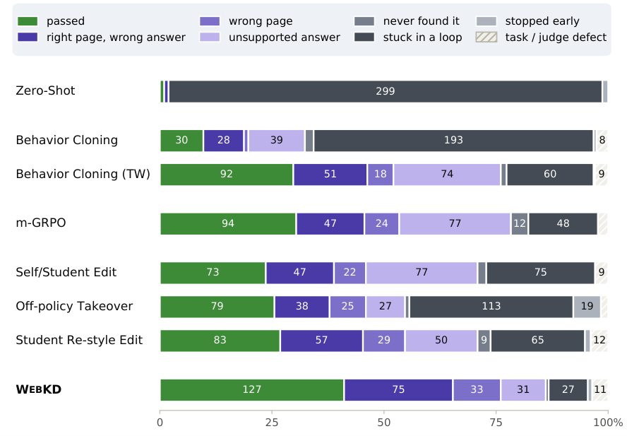

All propositions, lemmas, and theorems in the theory appendix are formalized in Lean 4 on finite models, with the formalization in supplementary material.
Abstract
Frontier web agents using closed models have high inference and computational costs. Smaller open models can be an alternative, but to be performant, they require training supervision from a human or teacher model. Token-level teacher distillation is not an option for closed teachers as it needs access to the model's logits. The standard approach is to imitate teacher demonstrations offline, but it trains the student on states it has never visited, and in a style it does not write in. We introduce WebKD, where the teacher is the editor of the student's failures. Given a failed episode, the teacher finds the first point of mistake, and rewrites the student's reasoning traces, harness states, and actions from that point onward. The editing reveals that the teacher's corrections can be more surprising to the student than the student's own text. WebKD instead aims to edit minimally. In the data space, the teacher writes each correction in the student's style. In the objective space, the reasoning is weighted by its contribution to the action. A role-asymmetric KL anchor allows the corrected action to move freely while keeping the reasoning near the student's prior. On the TimeWarp benchmark, WebKD students gain about 5.5-10.7 pp over behavior cloning, outcome-reward RL, and teacher editing baselines. The performance transfers to unseen versions and to the live web in the OnlineMind2Web benchmark. WebKD opens a new way of distilling black-box models to improve the capabilities of open-weight web agents.
Problem
Small open-weight web agents need supervision from strong teachers, but frontier teachers are black boxes that expose no logits, so token-level distillation is unavailable. Behavior cloning on teacher demonstrations trains the student on states it never visits and in a style it does not write in.
Approach
WebKD makes the teacher an editor of the student's failed episodes. It localizes the first mistaken step, then rewrites the reasoning, harness states, and actions from that point onward in the student's own style. Training uses a loss that weights reasoning tokens by their pointwise mutual information with the action, plus a role-asymmetric KL anchor that keeps reasoning near the student prior while letting the corrected action move freely. The theory appendix results are machine-checked in Lean 4 on finite models, with a README mapping each result to its Lean declaration.

Figure 1: Overview of WebKD . (Top) At step t , the harness generates the observation history from the goal, accessibility tree, and previous responses. The web agent emits a five-component response conditioned on the observation history. The T hink, P lan, and S tep components carry their reasoning and running plan, the M emory component reads from and writes to the scratchpad memory, and only th
Results
On TimeWarp, WebKD students gain about 5.5-10.7 pp over behavior cloning, outcome-reward RL (m-GRPO), and teacher-editing baselines. The gains transfer to unseen interface versions and to the live web on OnlineMind2Web. Students still reach only about half of the GPT-5.5 teacher's success rate.

Figure 8: Failure mode analysis of Qwen3.5-4B. Each bar assigns every evaluation trajectory of a method to exactly one outcome for the 103\times 3=309 tasks.